Adriana Feliz10 de diciembre de 2018
¡¡¡LOS SUEÑOS SE HACEN REALIDAD!!! … ¡Y el 10 de diciembre de 2018 mi puerta por fin se abrió! ¡¡Voy a ser MÉDICA!!
Ver en Facebook →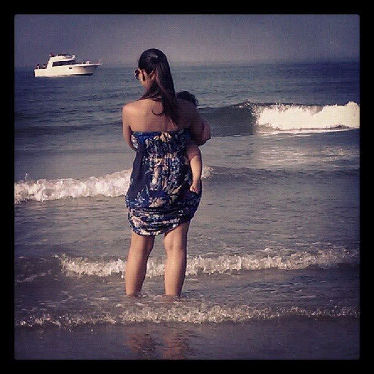
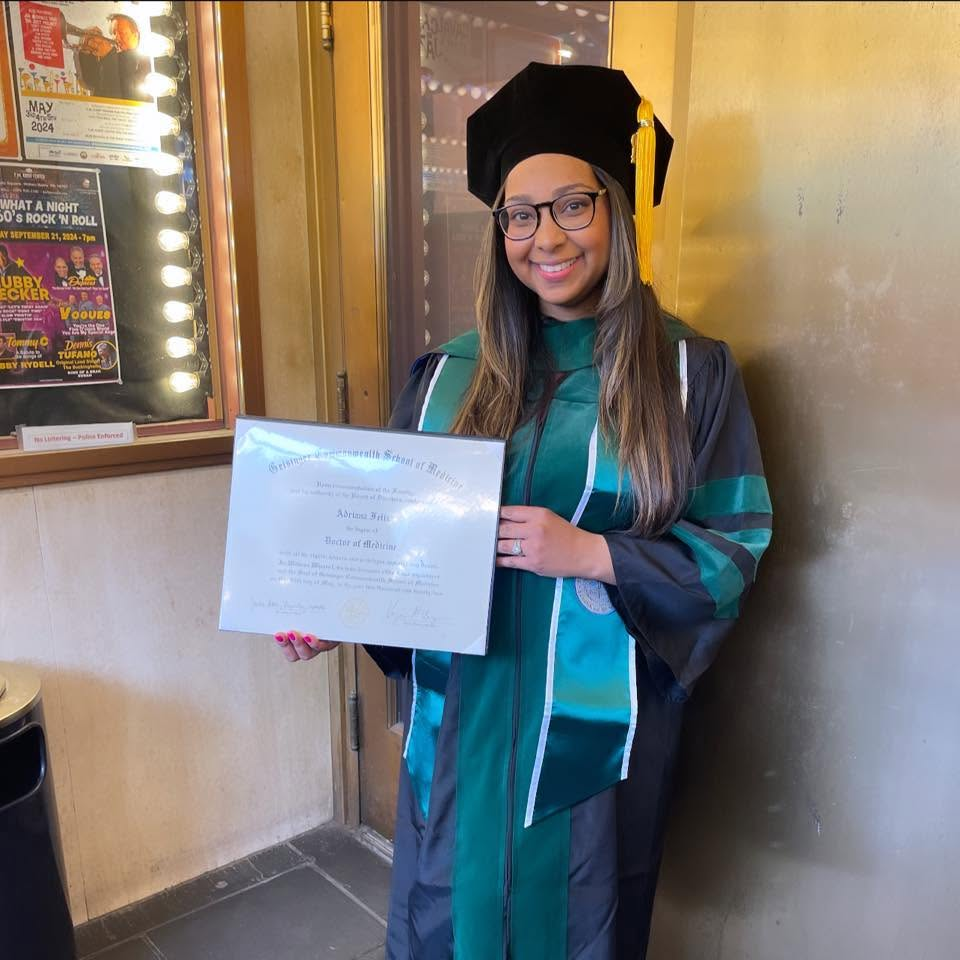
25 de marzo de 1991 – 16 de octubre de 2026
Geisinger Commonwealth School of Medicine · Neurología
Su familia: su esposo Joey Perea · sus hijos Jaelyn y Liam · sus padres Roberto y Blanca Iris · sus hermanos Alejandra y Tito
Ella cuidó hasta su último aliento.
La Dra. Adriana Feliz, MD fue una médica de 35 años y madre que dedicó su vida a cuidar a los demás — y cuidó hasta su último aliento. Su enfermedad comenzó con una infección viral; después de que la infección pasó, su sistema inmunológico no se apagó y comenzó a atacar sus propios órganos — una enfermedad rara llamada HLH (linfohistiocitosis hemofagocítica). Su padre, el Dr. Roberto Feliz, estuvo junto a su equipo de la UCI y luchó por ella con todo lo que la medicina puede ofrecer — en sus palabras: «Le tiré todo!!!». A pesar de todo, Adriana falleció el 16 de octubre de 2026 — y nadie que la amaba dejó algo sin intentar.
Momentos de su propia línea de tiempo, en sus propias palabras.
¡¡¡LOS SUEÑOS SE HACEN REALIDAD!!! … ¡Y el 10 de diciembre de 2018 mi puerta por fin se abrió! ¡¡Voy a ser MÉDICA!!
Ver en Facebook →Hace exactamente un año, obtuve una maestría en Ciencias Biomédicas en Geisinger Commonwealth… ¡¡Los sueños se hacen realidad!!
Ver en Facebook →¡Hoy puedo decir alto y con orgullo que voy a ser médica!
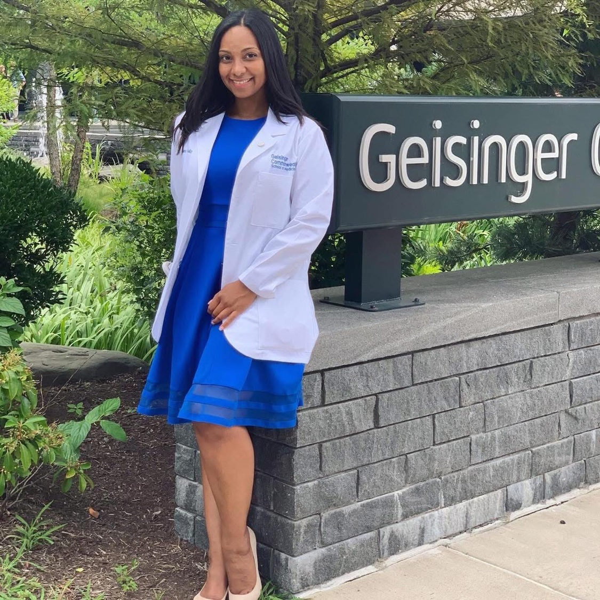
Ver en Facebook →¡Tan orgullosa de continuar tu legado como médica! … La Dra. Feliz 2.0 ha entrado al chat
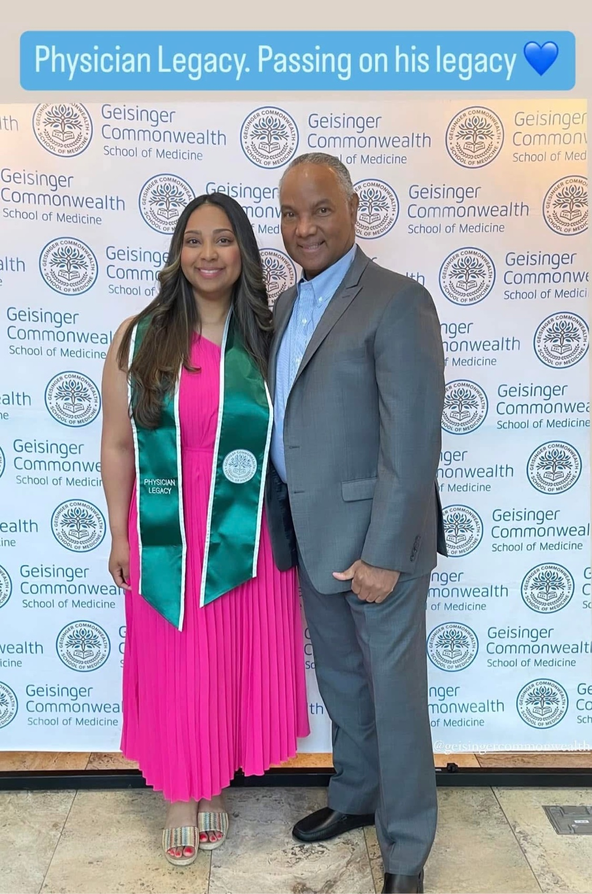
Ver en Facebook →Permítanme presentarme de nuevo: Dra. Adriana Feliz, MD, MBS
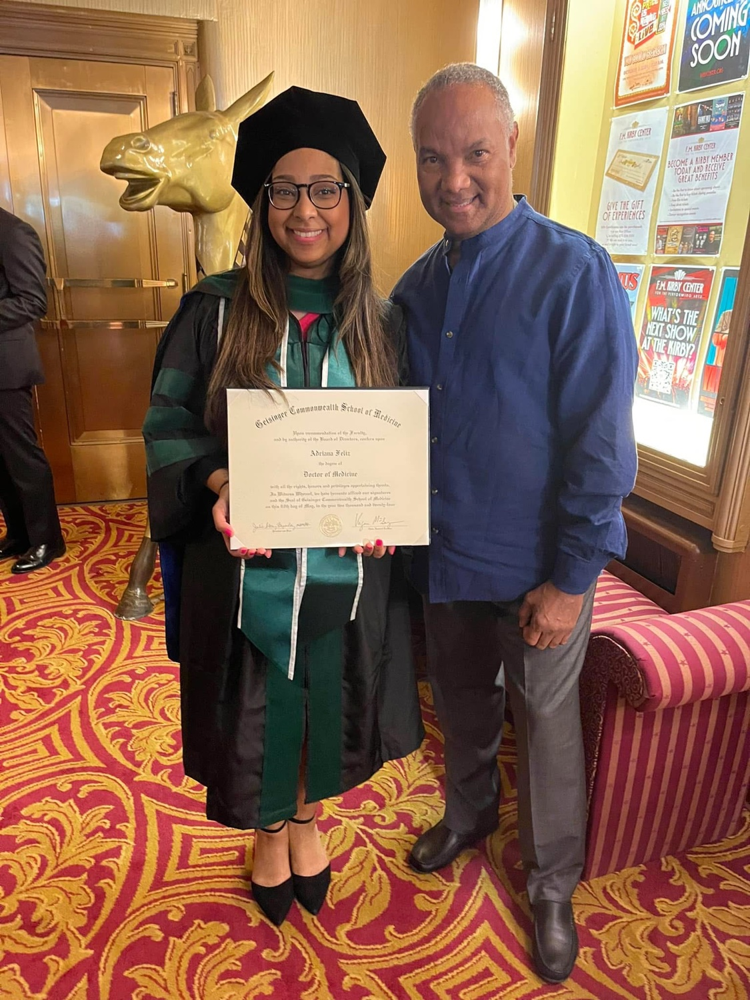
Ver en Facebook →Ser médica es una locura…
Su reflexión sobre pasar de dar una noticia devastadora a la familia de un paciente a ser mamá en casa — en la misma hora.
Ver el reel en Facebook →Lo que he estado haciendo últimamente, además de la residencia de neurología… ¡¡HORNEAR!! … ¡Se ha convertido en mi lugar feliz!
Ver en Facebook →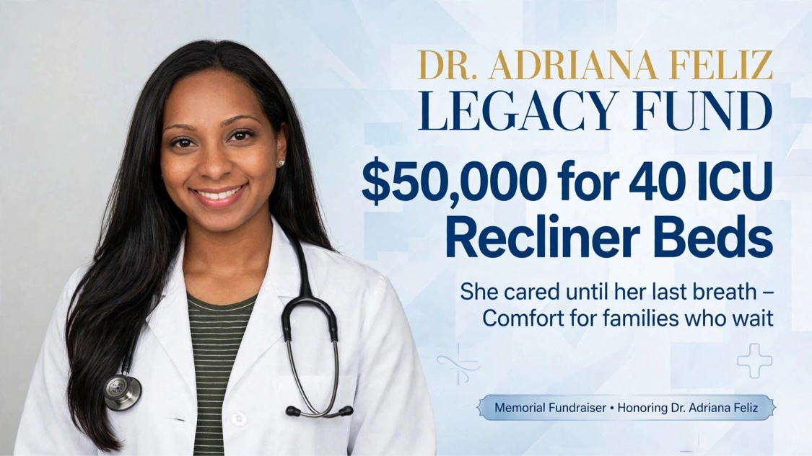
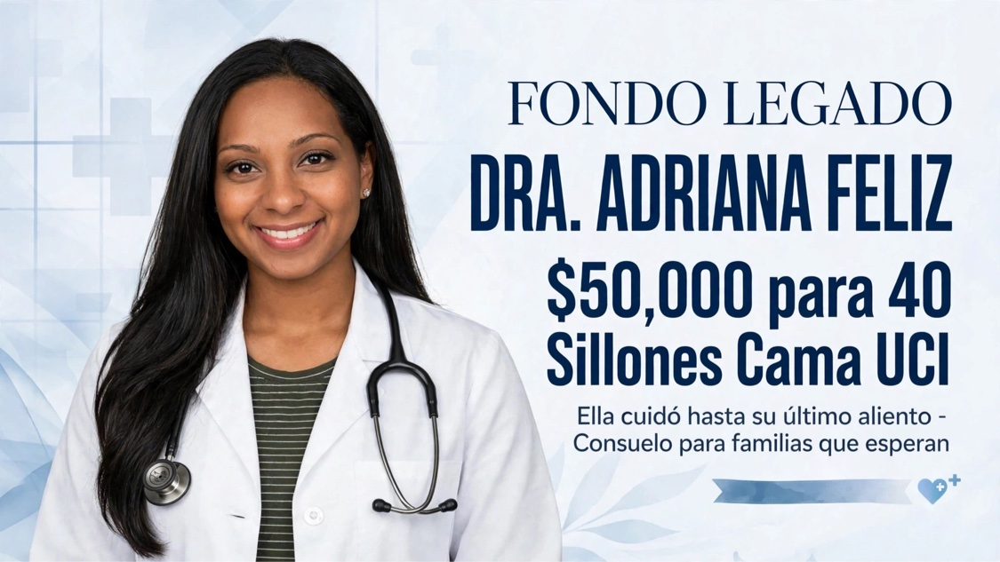
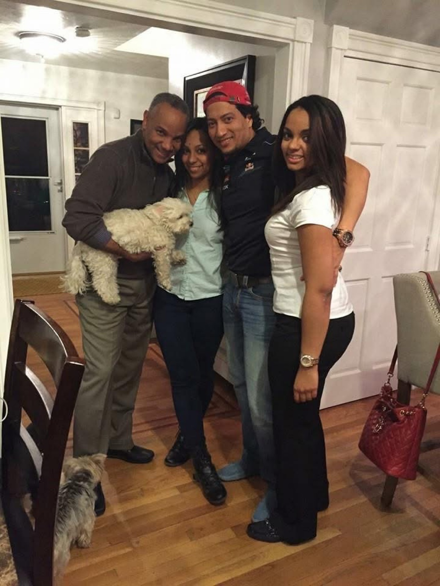
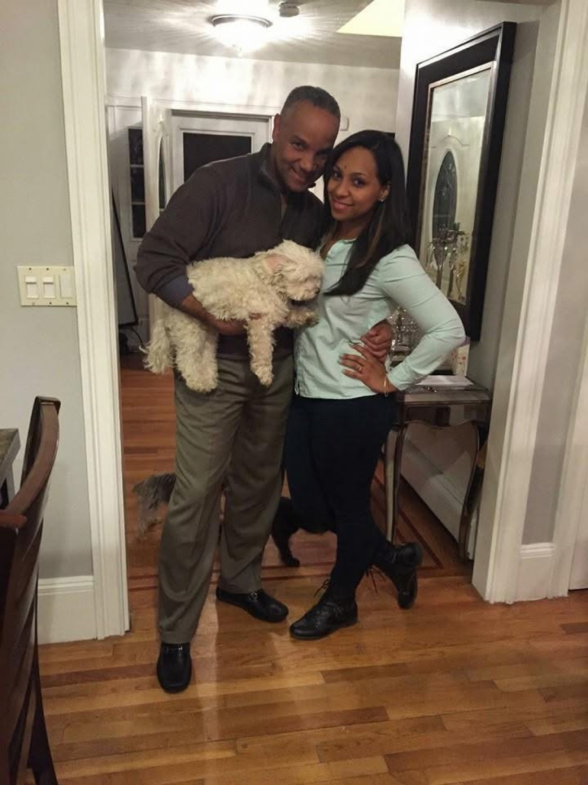
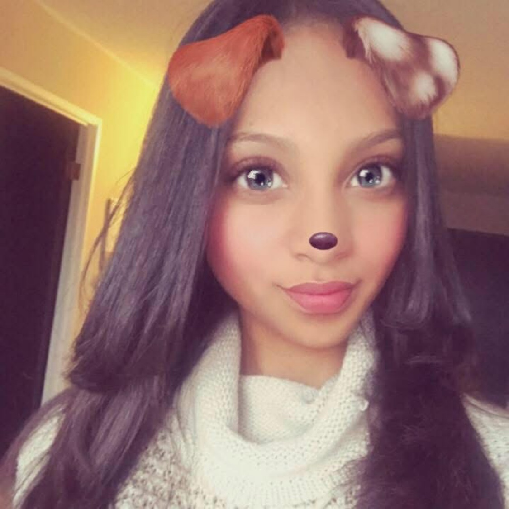
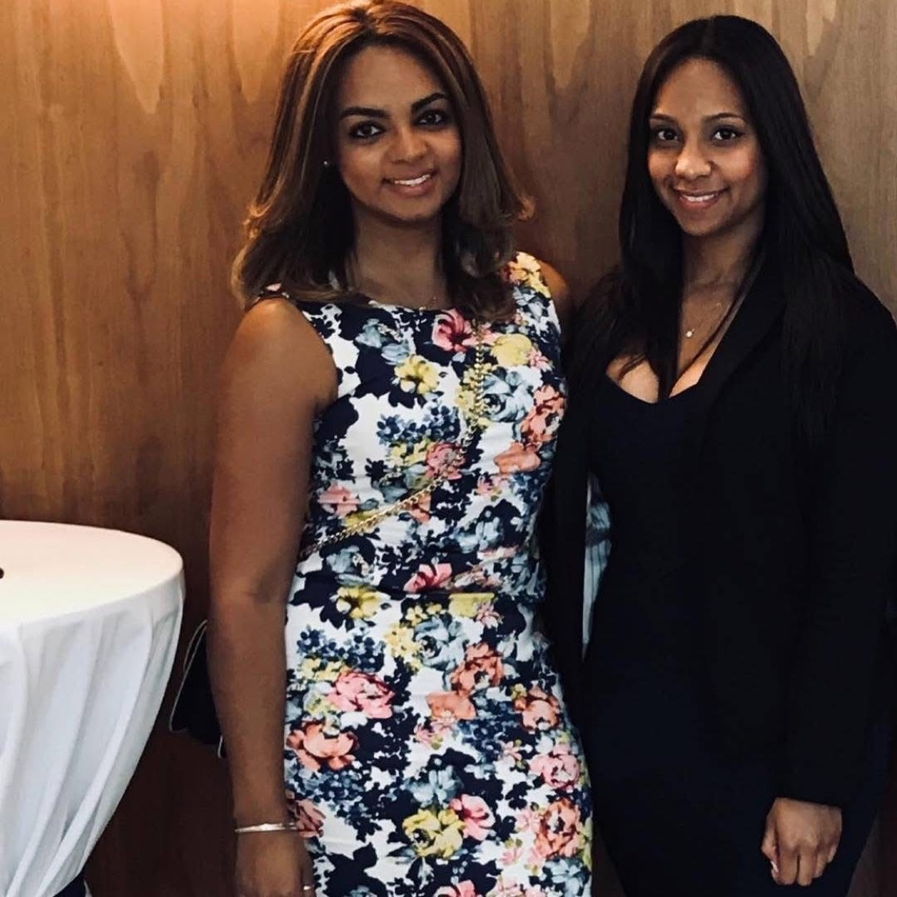
Un mensaje de su padre, el Dr. Roberto Feliz
Mi nombre es el Dr. Roberto Feliz. Mi hija, Adriana Feliz, MD, falleció a los 35 años después de una valiente lucha por su vida en la Unidad de Cuidados Intensivos del Hospital Universitario de Duke.
Durante su hospitalización, nuestra familia vivió días y noches llenos de incertidumbre, oración y esperanza. Como padre, viví el dolor de ver a mi hija en estado crítico. También comprendí cuánto apoyo necesitan las familias mientras permanecen cerca de un ser querido en cuidados intensivos.
En esos momentos, nadie quiere alejarse. Pero el cansancio se acumula, y los lugares cómodos para descansar son limitados. Una cama, un sillón reclinable o un espacio tranquilo pueden brindar un alivio enorme a una familia que enfrenta una de las experiencias más difíciles de su vida.
En memoria de nuestra amada Adriana, queremos convertir nuestro dolor en un acto de amor para otras familias.
Esta recaudación busca mejorar el descanso y la comodidad de las familias de los pacientes en la UCI de Duke. Nuestro objetivo es coordinar con el hospital para proporcionar camas o sillones cama apropiados para los familiares y mejorar las áreas designadas de descanso familiar, según las necesidades y los requisitos del hospital.
Esta es una iniciativa liderada por la familia. Compartiremos actualizaciones sobre la coordinación con el hospital y sobre cómo se utilizan los fondos, para que los donantes puedan ver la diferencia que hace su generosidad.
No podemos eliminar el dolor de tener a un ser querido en cuidados intensivos. Pero juntos, podemos ayudar a las familias a enfrentar ese dolor con mayor comodidad, dignidad y apoyo.
Cada donación, grande o pequeña, será profundamente agradecida. Si no puede donar, compartir esta recaudación es otra forma significativa de ayudar.
Que la memoria de Adriana viva en cada familiar que encuentre un lugar para descansar, recuperar fuerzas y permanecer junto a la persona que ama.
Con amor y gratitud,
Dr. Roberto Feliz y familia
En memoria de Adriana Feliz, MD.
Escanee para donar
Viernes, 23 de octubre de 2026 · 5:00–8:00 PM
Dockray & Thomas Funeral Home
455 Washington St, Canton, MA 02021
Sábado, 24 de octubre de 2026 · 10:00 AM
Congregational Church of Canton
1541 Washington St, Canton, MA 02021
Esta página es permanente: su luz permanece aquí.
Organizado por amigos de la familia Feliz.